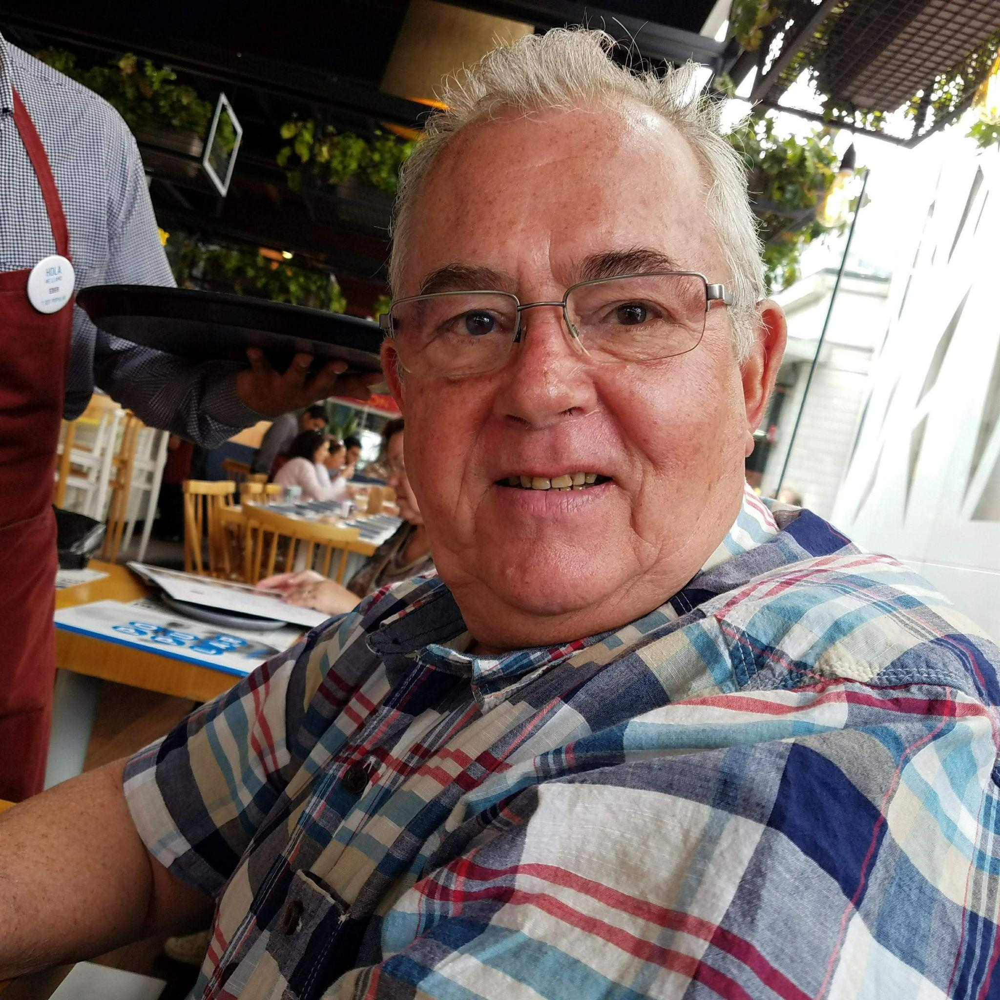

A life remembered
Remembering Terry McNair
Father, grandfather, friend, and maker.

Memorial photograph

On Monday, January 24, 2022, John (Terry) McNair, beloved father and respected community member passed away at the age of 76. He is preceded in death by his parents, Barbara and John (Jack) McNair, his brother Jim McNair, and his wife Suzanne.
Terry, as he was known to friends, was born in Imperial, NE. He spent his childhood on the family farm just 10 miles south of town with his older brother, Jim. In his later years, Terry spoke with pride about the hard work and chores he often did to keep the farm running. From milking cows and raising hogs, to hours in the saddle of a tractor. Of course, it wasn’t all hard work. Terry couldn’t turn down the opportunity for a good prank or a little harmless mischief. The farm and Imperial were never far from his heart and after his retirement, Terry turned his attention back to farming.
Leaving the farm after high school, Terry attended college in Lincoln, NE and joined the Air Force as an accountant. Terry became quite the fashion icon during this time, modeling for a local clothing retailer and sporting a curl of hair on his forehead just like Elvis. While at college, he met his wife of 29 years, Suzanne McNair (nee Shokes).
After college, Suzanne and Terry, along with Suzanne’s brother Doug Shokes, started the famous Yellow Submarine food truck (before food trucks were cool). Terry modified a van into a sandwich shop on wheels, and with Suzanne’s wild enthusiasm and Terry’s business acumen, the endeavor was a success. Eventually opening two storefront restaurants in addition to the food truck. When Suzanne became pregnant with their son, Ryan, they closed up shop and Terry took a job as an accountant and project manager with Ceco. Terry kept the recipes alive, making Yellow Submarine barbeque sauce, poppy sauce, and coleslaw for family and friends.
His work at Ceco brought Terry to Mt. Pleasant (with a stop in Toronto) where he lived the last three decades of his life and raised a family. Terry was deeply committed to customer service and always went the extra mile to make sure a building project was just right. Many of his Ceco clients became lifelong friends with whom he would visit and go on fishing trips. He also took advantage of the large supply of scrap metal and tools in the Ceco plant to make cherished metal sculptures for family and friends.
Terry was always there to lend a helping hand to a friend or neighbor. He loved having the house filled with the hustle and bustle of Ryan and his friends making model rockets, potato cannons, a trebuchet, and hosting LAN parties.
Terry was devoted to the Mt. Pleasant community. He served as a volunteer and officer for many organizations including: Noon Rotary, Dollars for Scholars, Planning and Zoning Commission, and Midwest Central Railroad. He loved selling train tickets during Old Threshers. Every Friday morning he could be found having breakfast with his friends at Rich Garrel’s cabin.
He was a charter member of the Henry County Heritage Trust, fulfilling the legacy and dream of his late wife, Suzanne, by continuing the restoration and development of the historical Van Allen House. This included physically moving the house to its present location on the former Saunders School property.
In 2007, Terry judged his first BBQ contest in Mt. Pleasant, which began 14 years of judging at local contests around Southeast Iowa as well as the annual American Royal competition in Kansas City. He was a skilled chef as well, known for his smoked meats and other special treats enjoyed by family and friends.
Terry was an avid traveler with trips taking him to 6 continents and more than 25 countries. He especially enjoyed the freedom to travel after his retirement in 2016, and was known to hop on a plane at a moment’s notice to go fishing in the Gulf of Mexico with his cousin, Paul. His last big trip in 2019 took him to Antarctica, something on his bucket list, where he swam in the Antarctic Ocean.
After his mother Barbara’s passing in 2015, Terry and his brother Jim took over operations of the family farm in Imperial, NE. He would return to the farm often to check on the crops and visit with family. McNair Farms covers almost 1,000 acres and operates 5 irrigation pivots which water the corn, wheat, soybeans, and oats. In 2021, he was the catalyst and project manager along with Judy McNair, Jim’s widow, for the renovation of the family farmhouse.
In February 2021, his granddaughter Margot was born. A proud Grandpa, he doted on her and shared pictures of her with anyone who asked (and probably a few who didn’t).
Terry will be remembered for living his life to the fullest. Packing 76 years with travel, good food, more than a little Jack Daniels, and most of all, time with family and friends. He was never too shy to share how much he loved them. He is survived by his son Ryan McNair, daughter-in-law Kate, and granddaughter Margot who currently live in Kansas City. Services will be held later this year. Please visit www.terrymcnair.com to see his metal sculptures and find more details. In lieu of flowers, the family asks that you donate to the Henry County (IA) Heritage Trust.